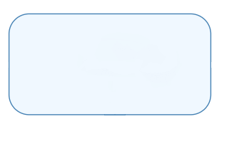
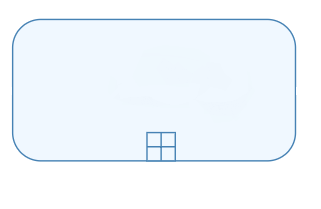
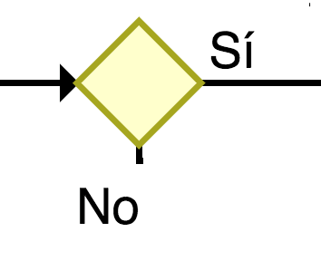
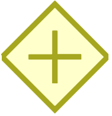
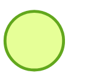
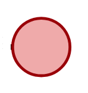
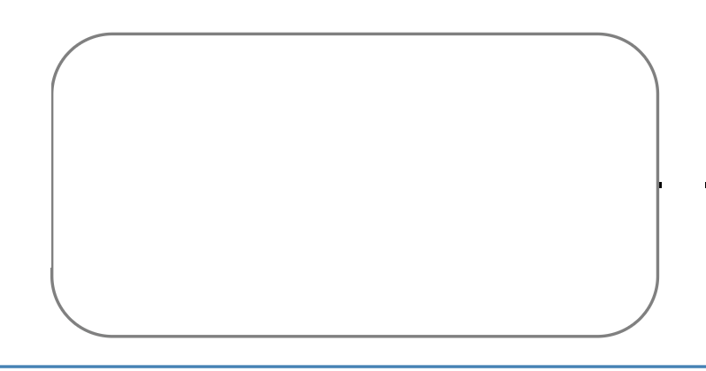

Los mapas de procesos tienen por objeto describir y contener información relativa a todos los permisos que un proyecto tipo de inversión requiere para poder operar. Es decir, describen el desarrollo del proyecto, desde la toma de decisión de inversión por parte del titular, hasta el inicio de operación.
El proceso de inversión de un proyecto está escrito según la notación de procesos de negocios (BPM por sus siglas en inglés). Un mapa está compuesto esencialmente por dos grandes bloques:
Etapas: se encuentran en la parte superior de cada dibujo y representan los grandes hitos de un proyecto de inversión (ejemplo: pre-construcción, construcción y operación). columnas
Lanes: corresponde a los nombres de las entidades que participan en el otorgamiento de los permisos, y se encuentran en el lado izquierdo del dibujo. filas
| Notación | Nombre | Significado |
|---|---|---|
|  | Actividad | Acciones realizadas por la entidad correspondiente. |
|  | Subproceso | Representa actividades que, a su vez, corresponden a otro proceso. |
|  | Pregunta | Describe dos caminos excluyentes que puede seguir el flujo según una disyuntiva que debe ser respondida “si” o “no”. |
| O Inclusivo | Describe actividades que pueden desarrollarse conjuntamente o en forma separada. |
|
|  | Paralelo | Se refiere a actividades que temporalmente pueden ser realizadas simultáneamente. |
|  | Inicio | Sitúa el inicio del proceso (decisión de inversión). |
|  | Fin | Indica el fin del proceso (entrada en operación del proyecto). |
Además de lo anterior, se destacan con colores las siguientes actividades:
| Notación | Nombre | Significado |
|---|---|---|
|  | Permisos intra e inter entidades | Actividades que no constituyen un permiso propiamente tal, sin embargo, corresponden a acciones relevantes para la obtención del permiso. |